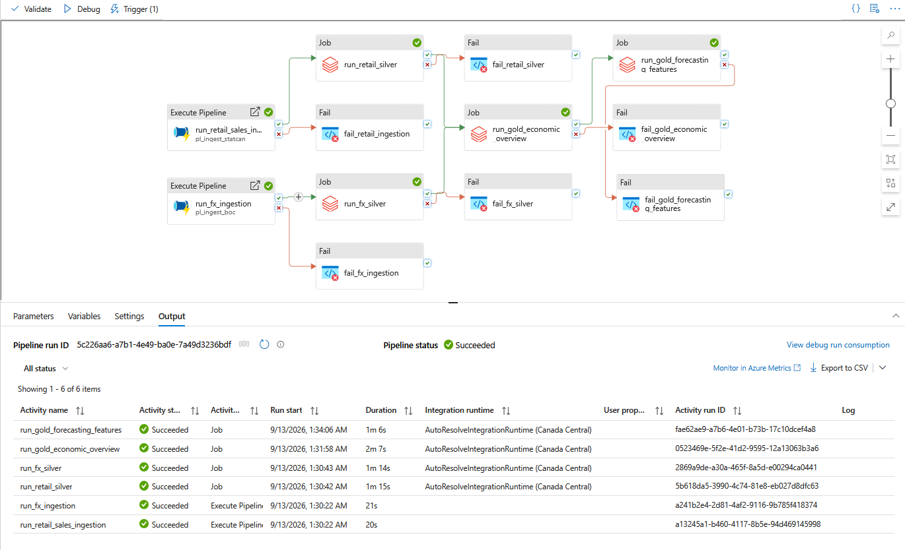

Preserve Raw Data
Bronze retains source-aligned data so upstream changes can be traced and data can be reprocessed.
DATA PIPELINE
Azure Data Factory coordinates the movement of official Canadian economic data through Bronze, Silver, and Gold processing before curated outputs are delivered to the reporting and forecasting layers.
INTERACTIVE PIPELINE
Select a stage to see its role, technology, input, output, and validation responsibilities within the pipeline.
SELECTED STAGE
The pipeline begins with official Canadian economic datasets published by Statistics Canada, the Bank of Canada, Finance Canada, and CMHC.
ORCHESTRATION
The representative master pipeline executes ingestion first, then triggers Databricks transformations only after upstream dependencies succeed.
Explicit failure branches are included so failed activities do not silently continue through the analytical workflow.
IMPLEMENTATION EVIDENCE
The workflow below shows representative ingestion, Silver and Gold processing, dependency paths, and explicit failure handling.

DATA QUALITY & CONTROL
The pipeline separates ingestion from validation so source data can be preserved while quality rules are applied before downstream analytical use.
Bronze retains source-aligned data so upstream changes can be traced and data can be reprocessed.
Schema checks, filters, transformations, and canonical rules are applied before integration.
Invalid observations are isolated rather than silently removed from the processing workflow.
Explicit failure branches prevent downstream Gold processing from running on incomplete upstream data.
OPERATIONS
The platform uses scheduled orchestration and failure monitoring to move from manual execution toward a repeatable economic data workflow.
Designed around recurring economic data refreshes.
Downstream transformations wait for required upstream activities.
Failures are surfaced rather than silently ignored.
Operational alerts support faster investigation when orchestration fails.
PIPELINE PRINCIPLES
Source acquisition remains independent from downstream business and analytical logic.
Raw source history allows transformations to be rerun without reacquiring historical data.
Dependency failures are surfaced explicitly so incomplete data does not propagate unnoticed.
The orchestration pattern can be extended as new datasets, validations, and analytical outputs are added.